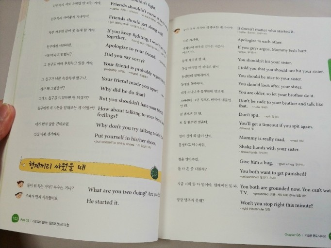

web
1. html
2. css
3. java
java
3. javascrsipt
hypertext Markupis the standard creating web pages and web
w3c
R JavaScript (JS)는 가벼운, 인터프리터 혹은 just-in-time 컴파일 프로그래밍 언어로, 일급 함수를 지원합니다. 웹 페이지를 위한 스크립트 언어로 잘 ...ata
envelopment
analysis approach (2020)|작성자 GSES 한상진 교수
